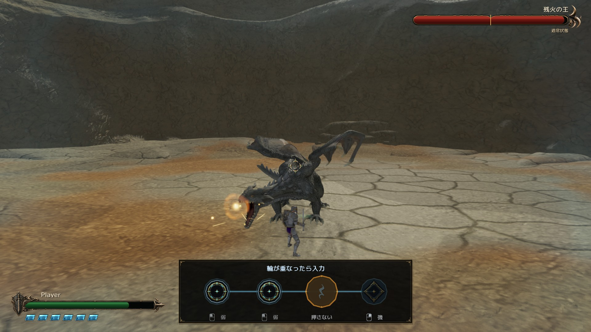
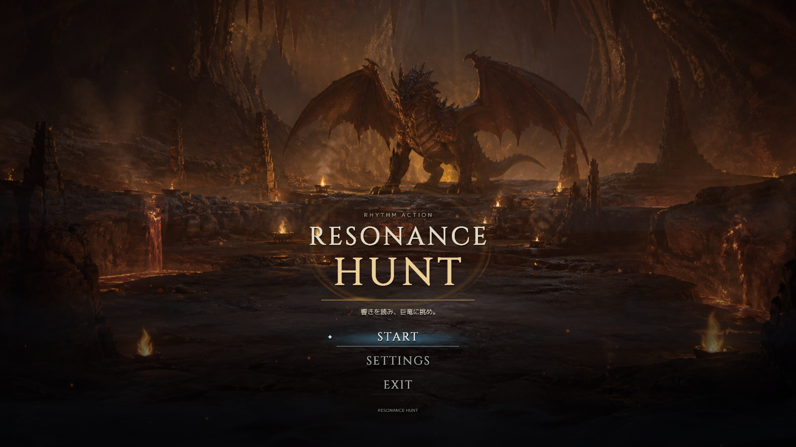
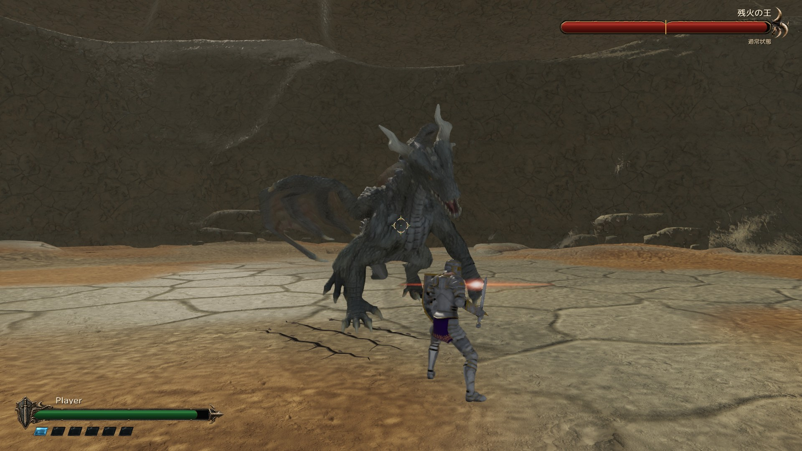
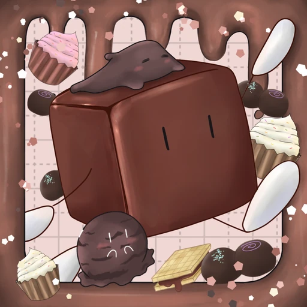

サウンドプログラマー・
岩崎 瑛斗 EITO IWASAKI
HAL東京 · ゲーム4年制学科 2028年卒業予定
ゲームの仕組みと、
サウンドをつくる。
C++・Unityで戦闘やゲーム進行を実装。
ゲームの動きに合わせたサウンド制御や、
音声制作ツールの開発にも取り組んでいます。

Resonance HuntC++ · DirectX 11 · Wwise / 個人制作
01 / 代表作品
ゲーム開発とサウンド実装
個人制作のゲーム、チーム制作での実装、音声制作ツール。
代表3作品を通して、担当した内容を紹介します。

3Dアクション / チーム制作
ボス戦・チュートリアル・サウンド
激突連鎖！ブットバッシュ
ラスボスの最終フェーズと、操作を学ぶチュートリアルを実装しました。サウンド実装全般も担当し、チャージ量に応じた音の変化やBGMの音量制御を組み込んでいます。

音声制作ツール / 個人制作
音声加工ツールと
Wwiseプラグイン
Voice Filter Authoring
音声を加工・試聴するツールを開発しました。DSPと操作画面に加え、Wwiseプラグインのビルドと配置を自動化する機能を実装しています。
担当範囲と実装を見る02 / プロフィール
プロフィール・実績

岩崎 瑛斗
サウンドプログラマー・
HAL東京 / ゲーム4年制学科
2028年卒業予定
すべての受賞歴・資格を見る 応用情報技術者 / 基本情報技術者 ほか
- J検 情報システム試験 基本スキル
- 基本情報技術者
-
ゲームアイデアコンテスト2024 特別賞
受賞作品：ステルス奪取 → - 応用情報技術者
- J検 情報活用試験 1級
-
HAL三校合同学内コンテスト 意欲賞
受賞作品：子猫の探検 → - CGエンジニア検定エキスパート
-
HAL三校合同学内コンテスト 技術力賞
受賞作品：Gravity Shift →
主な使用技術
使用技術と実装例
その他の技術・開発ツール
C / HLSL / DirectX 11 / OpenGL / WASAPI
Visual Studio / GitHub / Sourcetree / Unreal Engine
03 / 作品一覧
作品一覧
これまでに制作したゲームとツールを紹介します。
分野で絞り込み、担当内容やデモをご覧いただけます。
全11作品を見比べる ゲーム・ツール・音響実装
3Dアクション
Unity / CRI ADX
激突連鎖！ブットバッシュ
ラスボスの最終フェーズ・チュートリアル・サウンド実装全般を担当。

3DリズムアクションC++17 / DirectX 11 / Wwise
Resonance Hunt
戦闘・リズム反撃・Wwiseの拍同期を実装した、C++製の3Dリズムアクション。
 対戦アクション
対戦アクション
DirectX 11 / Wwise
アニマリー
プログラム全般を担当。描画表現・TCP通信・音響を実装した1v1対戦ゲーム。

パズルアクションUnity / C# / UI Toolkit
チョコっとテンパリング！
3つの姿で四面の塔を攻略。プレイヤー操作・四面の移動と表示・ステージ編集ツールを実装。
音声制作・DSPツール
C++ / Win32 / Wwise
Voice Filter Authoring
DSP・GUI・Wwiseプラグイン連携を担当。音の加工からゲームへの組み込みまで。
 サウンドミドルウェア
サウンドミドルウェア
C++20 / WASAPI
SoundLib
音を編集するStudioと、ゲームから再生・制御するRuntimeを開発中。
 パズルアクション
パズルアクション
Unity / C#
くるっと☆ぼうけんたん
ゲームジャム作品。サウンド全般と組み込み、音声再生の管理機能を担当。
 物理パズル
物理パズル
C++ / DirectX 11
Planet Game Planet
惑星を合体させるパズルゲーム。2D物理演算とオブジェクト管理を自作。
 3Dパズルアクション
3Dパズルアクション
Unity / C#
子猫の探検
三人称と俯瞰視点を切り替えて進む、カメラ制御を工夫した3Dパズルアクション。
 2Dアクション
2Dアクション
C++ / OpenGL
Gravity Shift
重力方向を変えて進む2Dアクション。ジャンプ・当たり判定・ジャイロギミックを実装。
 アナログゲーム
アナログゲーム
Board Game / Level Design
ステルス奪取
ゲームアイデアコンテスト2024 特別賞。レベルデザインとプロトタイプを担当。